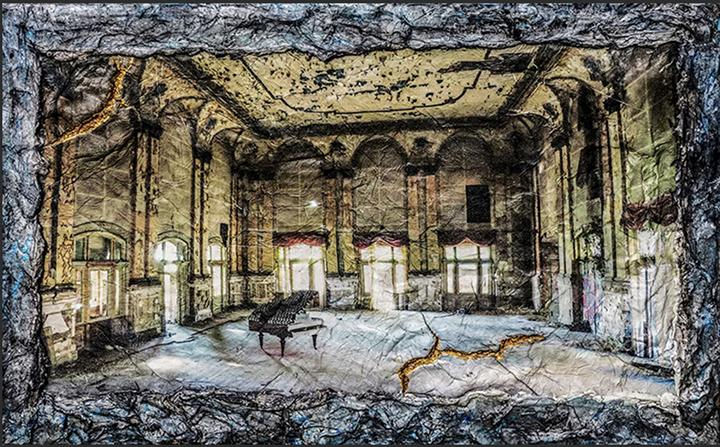
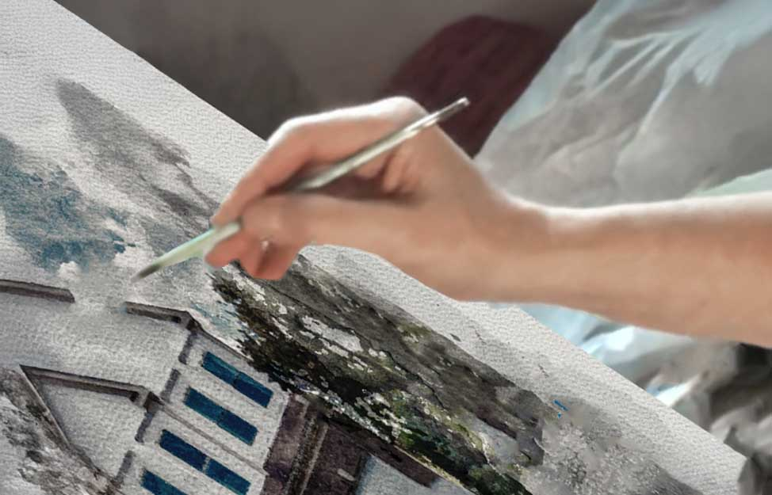
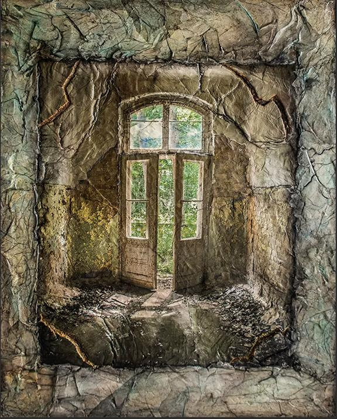

My work explores the emotional resonance of architectural space — from forgotten rooms in East Berlin to today’s cherished homes that live on in memory, even after they’ve been left behind.
Years ago, I was photographing and later painting the abandoned interiors of East Berlin — old Soviet barracks, stairwells, vast ballrooms bustling with old world charm, secret rooms (some of which were over a hundred years old). But these places weren’t just ruins. They were records. You could feel what had been left behind — not just objects, but echoes. I wasn’t documenting decay. I was painting what lingered: the trace of human presence, the architecture of memory.

Many of those buildings no longer exist. Torn down, bulldozed over, erased. My work is now among the last surviving visual records of spaces that once held generations of life.
I never set out to do house portraits. But one day, a man asked me to create a hand-painted portrait of the home he and his wife were leaving after twenty years. He didn’t want a photo. He wanted to give her a memory made visible — something luminous, specific, pulsing with everything they had lived through.
As I worked on that piece, I recognized the same mystical feeling I had in Berlin. Stillness. Intimacy. The presence of absence. It wasn’t a shift in direction — it was a return to the same listening, now focused on homes still warm with memory. That was the beginning of The Memory House.
Today, I create bespoke portraits of personal architecture — homes that have held love, grief, joy, and transition. Some are given as gifts. Some are farewells. Some are acts of remembrance. All begin the same way: with care, intention, and deep attention.
Each portrait is composed by hand. Every detail matters. Every line speaks to what once lived within the walls.
Because I don’t just paint houses.
I paint what still lives inside them.
Welcome to The Memory House. I’m honored you’re here — and I’d love to create something meaningful for you.
